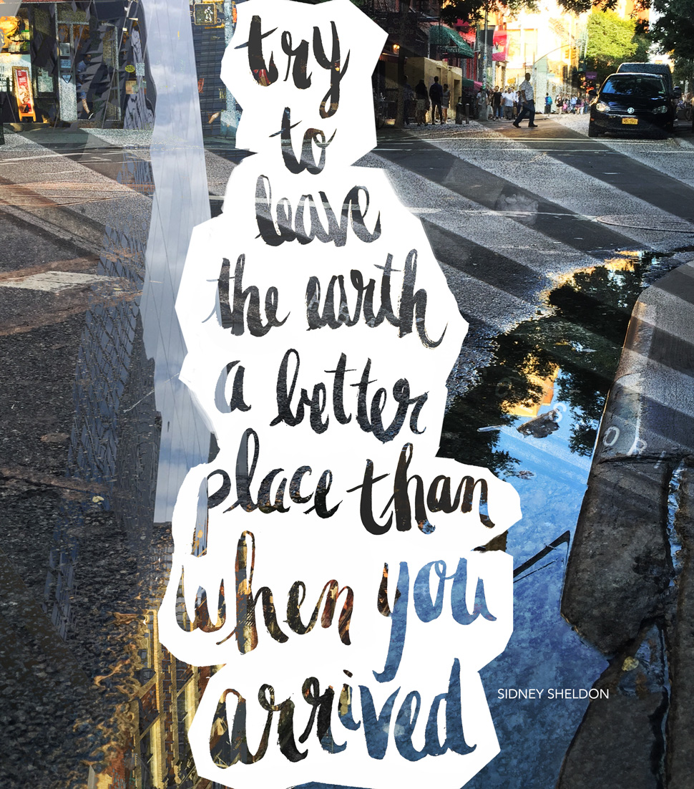
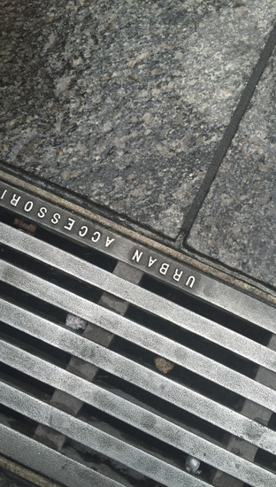
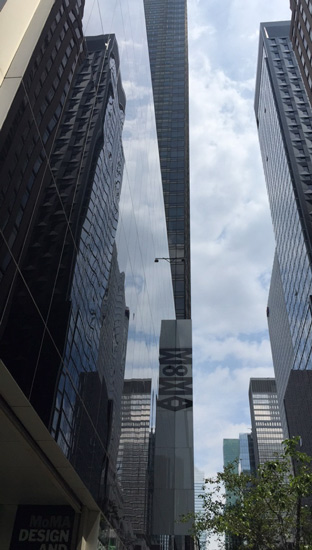
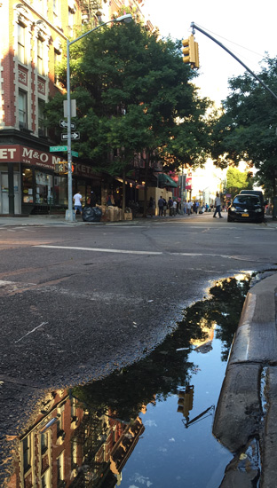
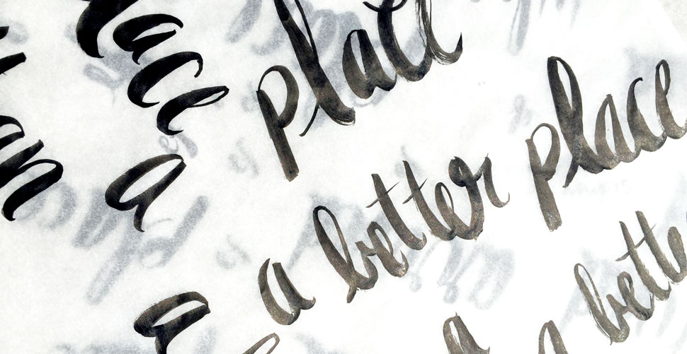
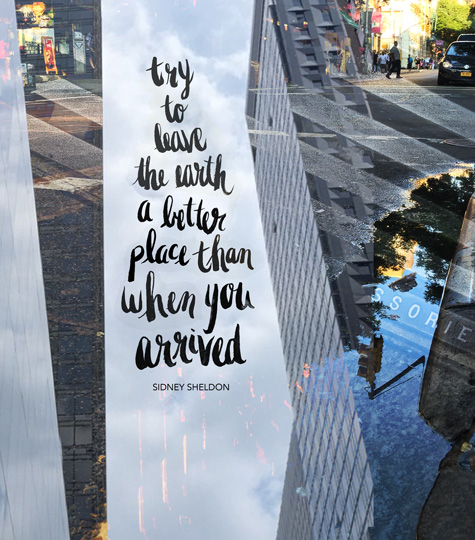
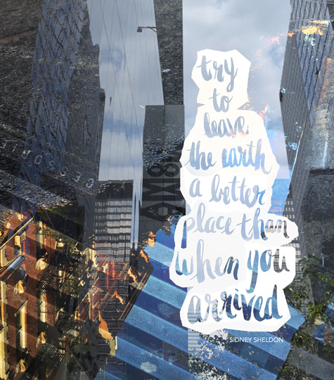
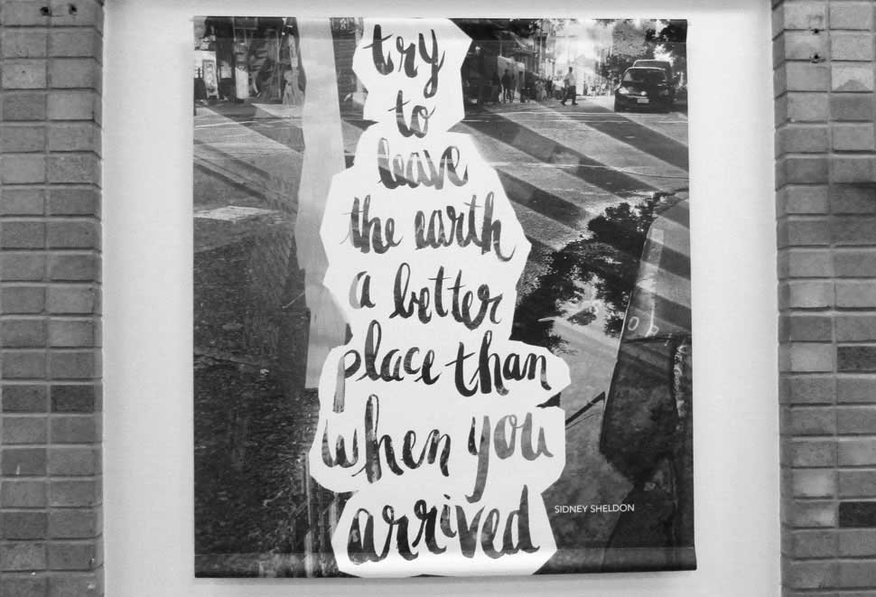
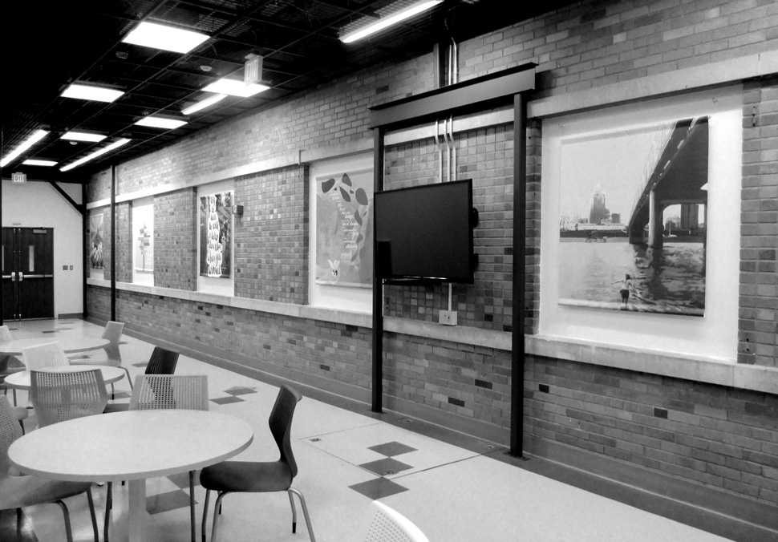

© 2015 Emily Finley All Rights Reserved // Hand-Coded
ENVIRONMENTAL HEALTH MURAL
ARTWORK FOR KETTERING ATRIUM // NIKON D2300, PHOTOSHOP, PENTEL BRUSH PEN
The University of Cincinnati underwent a $5 million renovation project, turning the atrium of the Kettering Laboratory Complex into a beautiful space for students and faculty. The Chair of Environmental Health, Shuk-Mei Ho, PhD, envisioned a collaboration between the Department of Environmental Health and the College of Design, Architecture, Art, and Planning. Six design students were selected to create artwork representing the department's core values.
After visiting New York City over the summer, I captured the detrimental effects gasoline and other elements can have on the environment through a series of photos, combining and overlaying them in Photoshop. I used a Pentel Brush Pen, hand lettering a quote from American writer and environmental activist Sidney Sheldon. When we respect the Earth, the benifits are reciprocated.








